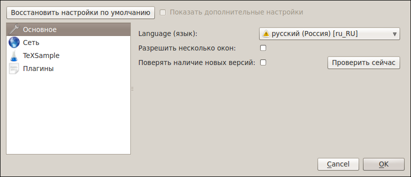

[Назад: 1.2. Управление аккаунтом и восстановление]
[Далее: 2. Лабораторные работы]
Настройки
Для более удобной работы с редактором предлагается несколько настроек. Они разделены на секции.
Чтобы получить доступ ко всем имеющимся настройкам, выберите опцию "Показать дополнительные настройки". Чтобы
вернуть настройки к исходным значениям, нажмите "Восстановить настройки по умолчанию" (действует не на все
настройки).
Основные

Language (язык). Отвечает за язык интерфейса всего приложения.
Разрешить несколько окон. Выбор этой опции позволяет открывать несколько окон редактора одновременно.
Если же опция не выбрана, то все файлы будут открываться в одном окне.
Проверять наличие новых версий. Если эта опция выбрана, при каждом запуске CloudLab Client будет
автоматически подключаться к серверу обновлений и проверять наличие новой версии. Можно также проверить наличие новой
версии вручную, нажав кнопку Проверить сейчас. Если новая версия найдена, выводится диалог со ссылкой для
скачивания.
Сеть
Режим прокси. Позволяет выбрать режим прокси.
Если выбрана опция Системный прокси, будет использоваться прокси-сервер, заданный в настройках операционной
системы. Если выбрана опция Пользовательский прокси, можно задать параметры прокси-сервера вручную. Отключить
прокси для CloudLab Client можно, выбрав опцию Без прокси.
TeXSample
Адерес сервера. Позволяет указать адрес сервера TeXSample. По умолчанию адрес выбирается автоматически.
Новые адреса автоматически добавляются в список. Их можно удалить в дальнейшем при помощи кнопки справа от поля адреса.
Логин/Адрес эл. почты. Логин пользователя TeXSample или его адрес электронной почты.
Пароль. Пароль пользователя. Если вы не хотите каждый раз вводить пароль при подключении, можно включить
сохранение пароля при помощи соответствующей кнопки справа. Это безопасно, так как пароль хранится в зашифрованном
виде.
Подключаться при запуске. Эта опция определяет, нужно ли автоматически подключаться к TeXSample при
запуске CloudLab Client.
Включить кэширование. Если выбрано, то данные сервиса TeXSample будут сохраняться на диске, чтобы не
скачивать их с сервера каждый раз заново. Однако, файлы кэша занимают место на диске. Можно воспользоваться кнопкой
"Очистить кэш", если у вас заканчивается место на диске.
Важно: При смене адреса сервера кэш автоматически очищается.
Плагины
На этой вкладке можно увидеть доступные плагины, а также
активировать/деактивировать их (для этого нужно поставить/убрать галочку напротив названия плагина).
Можно также настроить плагин, посмотреть краткие сведения о нем или Справку, выбрав нужный плагин в списке и нажав
соответствующую кнопку справа.
На данный момент плагинов для CloudLab Client нет, но они могут появиться в будущем.
[Назад: 1.2. Управление аккаунтом и восстановление]
[Далее: 2. Лабораторные работы]